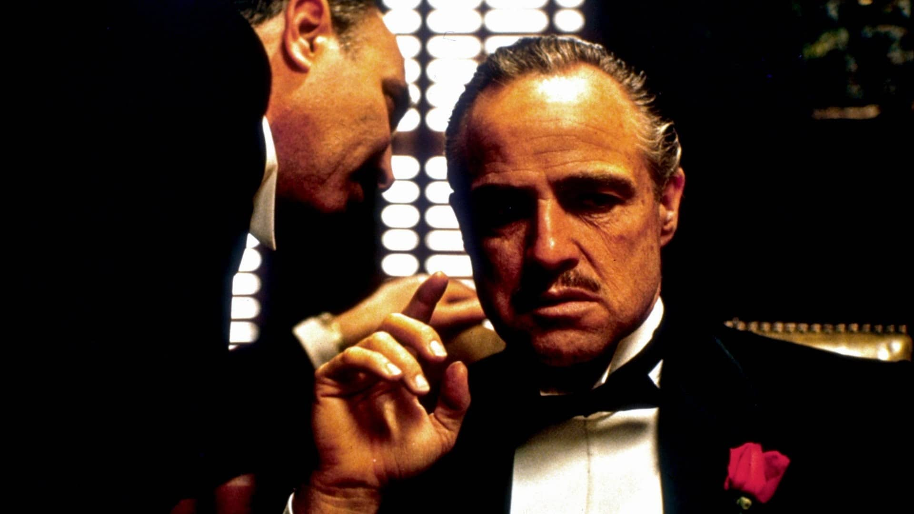
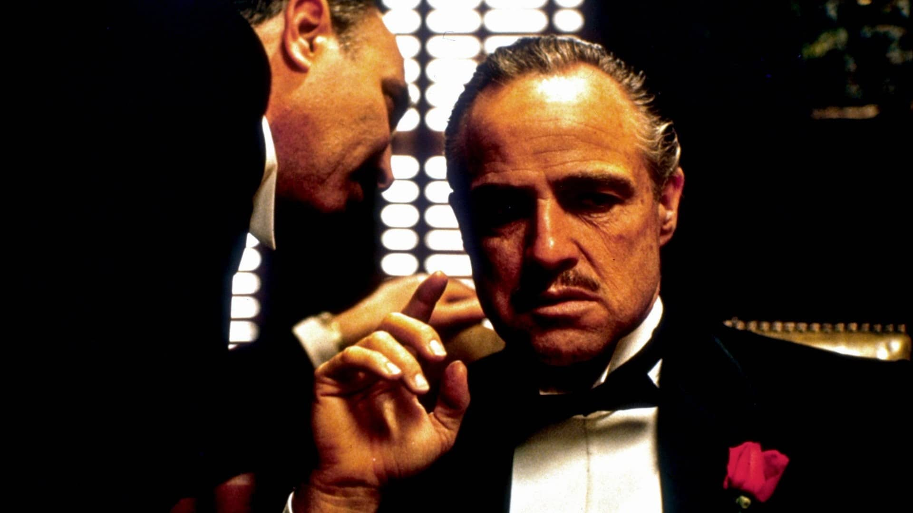

🟉 🟉 🟉 🟉 🟉
Stranger things
2016
es la historia de un niño que desaparece en el pequeño pueblo de Hawkins, Indiana, sin dejar rastro en 1983. En su búsqueda desesperada, tanto sus amigos y familiares como el sheriff local se ven envueltos en un enigma extraordinario: experimentos ultrasecretos, fuerzas paranormales terroríficas y una niña muy, muy rara...


🟉 🟉 🟉 🟉 🟉
Juego de tronos
2011
La historia se desarrolla en un mundo ficticio de carácter medieval donde hay Siete Reinos. Hay tres líneas argumentales principales: la crónica de la guerra civil dinástica por el control de Poniente entre varias familias nobles que aspiran al Trono de Hierro; la creciente amenaza de "los otros", seres desconocidos que viven al otro lado de un inmenso muro de hielo que protege el Norte de Poniente; y el viaje de Daenerys Targaryen, la hija exiliada del rey que fue asesinado en una guerra civil anterior, y que pretende regresar a Poniente para reclamar sus derechos dinásticos.
🟉 🟉 🟉 🟉 🟉
Vikingos
2013
Narra las aventuras del héroe Ragnar Lothbrok, de sus hermanos vikingos y su familia, cuando él se subleva para convertirse en el rey de las tribus vikingas. Además de ser un guerrero valiente, Ragnar encarna las tradiciones nórdicas de la devoción a los dioses. Según la leyenda era descendiente directo del dios Odín
🟉 🟉 🟉 🟉 🟉
Bates motel
2013
Precuela contemporánea de la película "Psicosis", que nos hace un retrato íntimo de cómo se desarrolla la psique de Norman Bates durante sus años de adolescencia. Los fans descubrirán su historia de trasfondo oscuro y retorcido y conocerán de primera mano cuán profundamente intrincada es la relación con su madre, Norma, y cómo ello ayudó a forjar a uno de los asesinos en serie más famoso de todos los tiempos.

🟉 🟉 🟉 🟉 🟉
Braveheart
1995
En el siglo XIV, los escoceses viven oprimidos por los gravosos tributos y las injustas leyes impuestas por los ingleses. William Wallace es un joven escocés que regresa a su tierra despues de muchos años de ausencia. Siendo un niño, toda su familia fue asesinada por los ingleses, razón por la cual se fue a vivir lejos con un tío suyo.
 

🟉 🟉 🟉 🟉 🟉
El padrino
1972
América, años 40. Don Vito Corleone (Marlon Brando) es el respetado y temido jefe de una de las cinco familias de la mafia de Nueva York. Tiene cuatro hijos: Connie (Talia Shire), el impulsivo Sonny (James Caan), el pusilánime Fredo (John Cazale) y Michael (Al Pacino), que no quiere saber nada de los negocios de su padre. Cuando Corleone, en contra de los consejos de 'Il consigliere' Tom Hagen (Robert Duvall), se niega a participar en el negocio de las drogas, el jefe de otra banda ordena su asesinato. Empieza entonces una violenta y cruenta guerra entre las familias mafiosas.


🟉 🟉 🟉
Déjame salir
2017
Un joven afroamericano visita a la familia de su novia blanca, un matrimonio adinerado. Para Chris (Daniel Kaluuya) y su novia Rose (Allison Williams) ha llegado el momento de conocer a los futuros suegros, por lo que ella le invita a pasar un fin de semana en el campo con sus padres, Missy (Catherine Keener) y Dean (Bradley Whitford). Al principio, Chris piensa que el comportamiento "demasiado" complaciente de los padres se debe a su nerviosismo por la relación interracial de su hija, pero a medida que pasan las horas, una serie de descubrimientos cada vez más inquietantes le llevan a descubrir una verdad inimaginable.


🟉 🟉 🟉 🟉 🟉
Snatch. Cerdos y diamantes
2000
Franky es un ladrón de diamantes que tiene que entregar un valioso ejemplar a su jefe Avi, pero, antes de hacerlo, se deja convencer por un tal Boris para apostar en un combate ilegal de boxeo. En realidad, se trata de una trampa para arrebatarle el diamante. Cuando Avi se entera, contrata a Tony para encontrar a Franky y al diamante. Descubierto el triste destino de Franky, la recuperación de la gema desaparecida provoca una situación caótica, donde el engaño, el chantaje y el fraude se mezclan de forma sangrienta con perros, diamantes, boxeadores y gran variedad de armas.